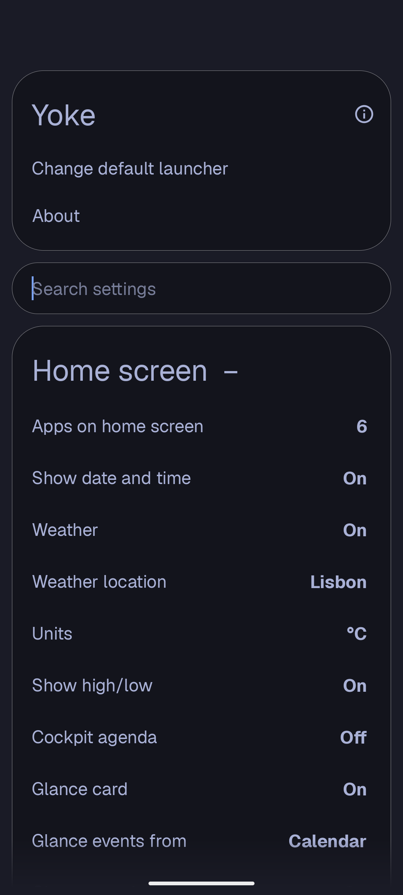
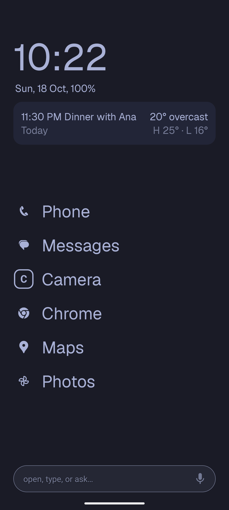
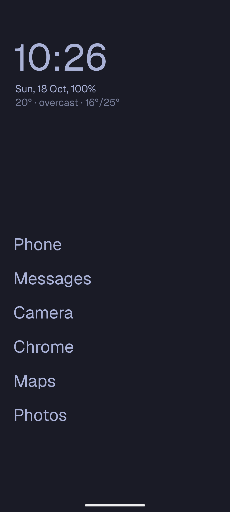
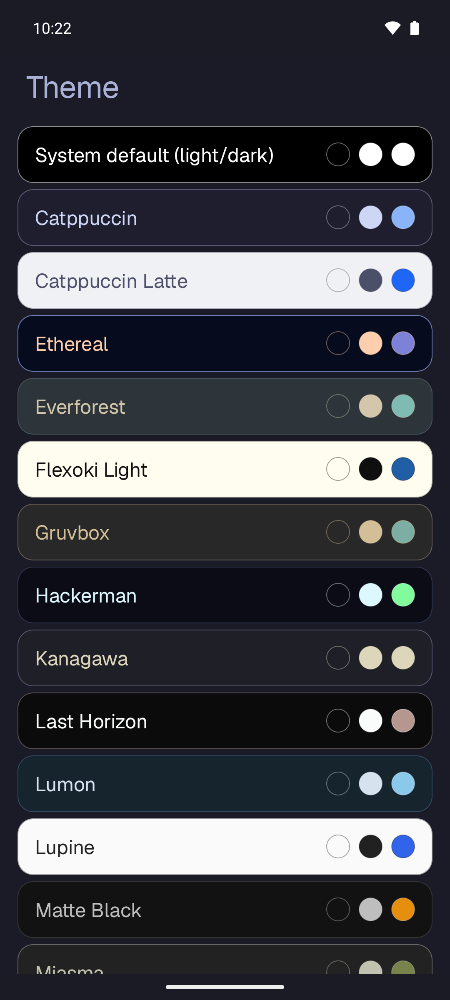
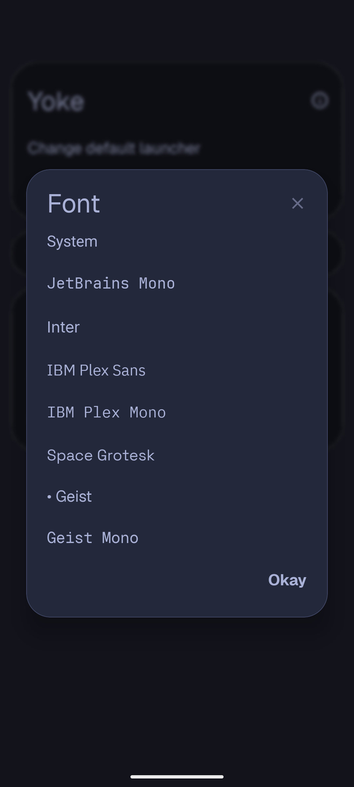
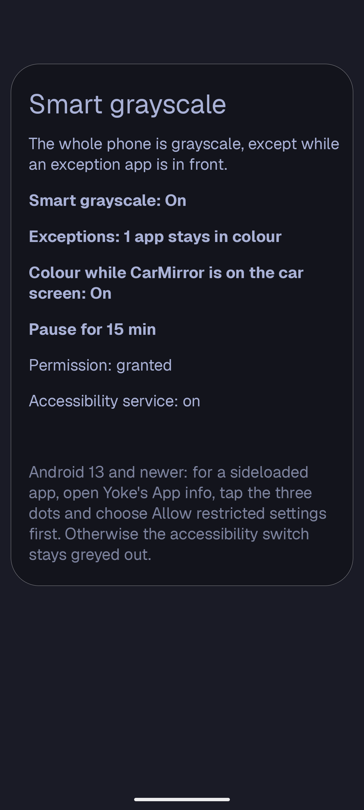
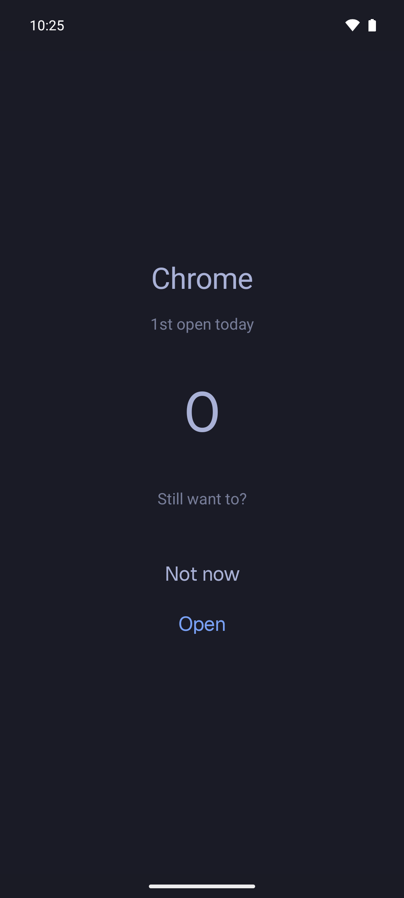
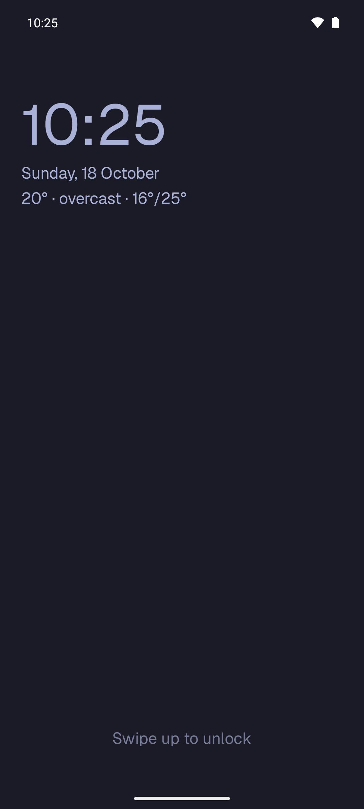
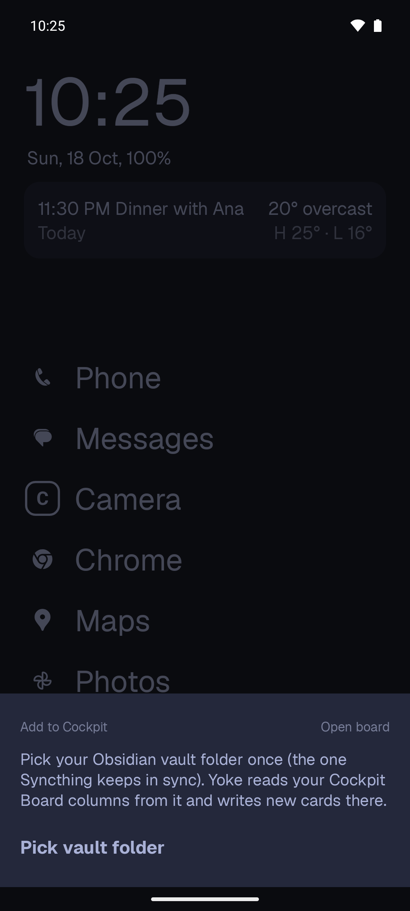
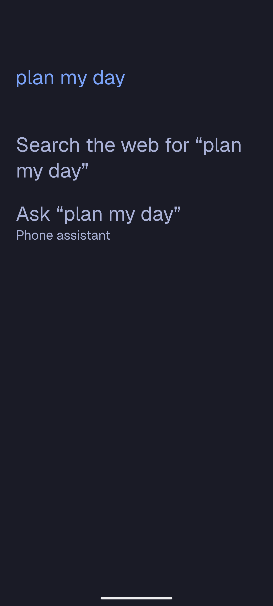

The Yoke guide
Getting started
- Install the APK from the download page and allow your browser to install apps when Android asks.
- Make Yoke your home app: press home and pick Yoke, or Settings, Apps, Default apps, Home app.
- Pick your home apps: tap an empty slot on home to choose its app. Settings, Home screen, Apps on home screen sets how many there are.
- Open Settings any time: swipe up and type "settings", or
>Settingsin the command palette.
Android 13 and newer protect sideloaded apps: before you can turn on Yoke's accessibility service (needed for double tap to lock, smart grayscale and limited apps from outside Yoke), open Yoke's App info, tap the three dots and choose Allow restricted settings.
Where settings live
Settings are grouped in six sections, and the search box at the top finds any row by name.
- Home screen
- Number of home apps, app style, glance card, bottom bar and the agent for Ask, date and time, weather, Cockpit agenda line, dictation language, notifications on home, now playing, screen time, alignment.
- Look
- Theme, wallpaper, lock screen, system colours follow theme, font, bold font, text size, icon row, Android status bar.
- Behaviour
- Gestures, double tap to lock, keyboard and auto-launch, search sources, web links, long-press power.
- Focus
- Smart grayscale, limited apps.
- Connections
- Obsidian vault, Conductore, secure settings permission, accessibility, Shizuku (optional).
- Data
- Backup and restore.

Home screen
Home is a clock, the date and your apps. Everything else below is optional and lives in Settings, Home screen.
App style
App style shows home apps as Text (the default), Icon + text or Icon only. Icons are tinted to the theme, and an app without a monochrome icon gets a letter tile. Tap an empty slot to pick its app.
Glance card
A small card under the clock with your next event and the weather. Glance events from picks the source: your phone's Calendar, your Cockpit board, or None for weather only. Declined and cancelled events are left out; tap the card to open the event. If you don't use Cockpit, Calendar works on its own, and turning the card off brings back the plain weather line.
Open, type or ask
Bottom bar: open, type or ask adds a search bar at the bottom of home. Type an app's name to open it, anything else to search, or tap the microphone to dictate. When nothing on the phone matches, the palette offers Ask: Yoke hands your words to the agent chosen in Agent for Ask, the phone's assistant (Gemini, for example) or Conductore. Yoke runs no AI of its own; it only passes the text on.


Themes and your Omarchy PC
Yoke ships every Omarchy theme, from Tokyo Night and Catppuccin to Rosé Pine and the light ones. A theme colours home, the drawer, the palette and every sheet. Pinch on home (or Settings, Look, Theme) opens the picker with a live preview. Changing theme fades from the old colours to the new ones instead of flashing.

Follow my Omarchy PC
If you use Conductore with an Omarchy PC, the phone can wear the same theme as your desktop and change when it changes.
- In Conductore: open Appearance and pick your PC under Follow Omarchy theme from machine. Conductore reads the PC's current Omarchy theme over SSH whenever it starts or comes back, your own custom themes included.
- In Yoke: Settings, Look, Theme, and choose Follow my Omarchy PC. Yoke reads the theme Conductore last synced and follows it live.
If the row says (not available), Conductore is missing, too old, or not following a machine yet. Only apps signed with the same key can read what Conductore shares, through the permission com.outsmartis.permission.READ_LAUNCHER_DETAILS.
Wallpaper
Settings, Look, Wallpaper. The source can be the theme colour, one of the theme's Omarchy backgrounds (downloaded once), or your own photo. Apply to sets home, the lock screen or both, and Dim wallpaper keeps text readable over a busy picture. Samsung phones may ignore a lock-screen wallpaper set by a launcher; use Settings, Wallpaper and style there.
System colours follow theme
Android's own colours (Quick Settings, the Settings app, Material You apps, the keyboard) can take the Yoke theme's accent. Turn it on in Settings, Look. It needs the secure settings permission described under Shizuku. Turning it off, or picking System default, gives your previous colours back. Some phones, Samsung's One UI among them, may ignore it.
Font
Settings, Look, Font: the system font, JetBrains Mono (Omarchy's font), Inter, IBM Plex Sans, IBM Plex Mono, Space Grotesk, Geist or Geist Mono. All are bundled under the SIL Open Font License, so nothing is downloaded.

Smart grayscale
The whole phone turns grayscale, except while an app you chose is in front. Colourful feeds stop pulling at you, while maps, photos and the camera stay in colour.
One-time setup
Yoke switches Android's own colour correction on and off. That needs a permission (WRITE_SECURE_SETTINGS) that Android only lets developer tools grant. You grant it once, it survives Yoke updates, and Yoke uses it only for this and for system colours. Pick one way:
- On the phone, with Shizuku (no computer): install Shizuku from Google Play or GitHub, start it with Wireless debugging, then open Yoke, Settings, Focus, Smart grayscale and tap Grant with Shizuku. Allow Shizuku's prompt. Yoke runs only
pm grantfor itself. - From a computer, with adb:
adb shell pm grant com.outsmartis.yoke android.permission.WRITE_SECURE_SETTINGSThe Smart grayscale screen has this command ready to copy.
Then turn on Yoke's accessibility service (Smart grayscale has a button for it). It only reads the name of the app in front, never what's on screen. The status lines at the top of Smart grayscale show Permission: granted and Accessibility service: on when both are done.
Choosing exceptions
Exceptions lists your apps with a search box; ticked apps stay in colour. Under it, Recently in front shows the apps you just used, including helper apps such as a gallery opened from the camera, so you can keep one in colour with a tap.
Day to day
- Pause for 15 min gives colour back for a while; tap the note on home to resume early. In the palette:
>Pause grayscale 15 minand>Grayscale on/off. - Quick Settings tile: add Grayscale to Quick Settings to switch it from anywhere.
- In the car: Colour while CarMirror is on the car screen keeps the phone in colour while CarMirror mirrors it to the car.

Limited apps
Friction instead of timers. A limited app opens only after a short, calm pause, and the pause grows each time you open it that day.
- Limit an app: long-press it and choose Limit this app, or tick it in Settings, Focus, Limited apps.
- The pause screen shows the app, how many times you've opened it today and a countdown. Not now takes you home; Open appears when the countdown ends.
- The curve: 3, 5, 8, 13, 21, 34 seconds, then 60 seconds for every further open. It resets every day at 04:00. Open counts never leave the phone.

How strict it is
Yoke uses the strongest level your phone allows. The levels add up, and nothing needs Shizuku unless you want the last one.
| Yoke only | Always on. Every way of opening the app from Yoke (home, drawer, search, gestures, icon row, notifications on home) goes through the pause. |
|---|---|
| Accessibility | With Yoke's accessibility service on, opening the app from a notification, recents, a link or another app also brings up the pause. After the countdown the app is yours until you leave it. |
| Hard pause | Per app, off by default, needs Shizuku. Android itself pauses the app: its icon is greyed out everywhere and it can't be opened until Yoke's countdown ends. Its notifications are hidden while paused, so don't use it for messengers. Turn hard pause off before uninstalling Yoke. |
Cockpit tasks and voice
Yoke writes cards straight into your Obsidian vault in the format of the Cockpit Board plugin, so Syncthing (or any sync) carries them to your desk. You don't need Cockpit to use Yoke; these rows simply stay off.
- Connect the vault: swipe left on home, tap Pick vault folder and choose your synced vault. Yoke reads the board's folder and columns from the plugin's own settings.
- Add a task: swipe left, type, pick a column and press Enter. Sharing text from any app to Yoke works too.
- Today: a line under the clock shows what's due. Tap it to finish, reschedule or open a card; long-press it to open the board.
Say it instead
Tap the microphone in the quick-add sheet, or bind Add to Cockpit (voice) to a gesture, or type >Dictate task. Yoke uses the phone's on-device recognizer when it has one, and understands dates and times in Portuguese and English:
The detected date shows on its chip before you save, and No date clears it. A bare number is never read as a date, so "the 1st draft" stays a title. The recognition language follows the phone, or pick Português or English in Settings, Home screen, dictation language.
Lock screen
Settings, Look, Lock screen sets how far Yoke goes. Each level includes the one before it.
- Off
- Yoke leaves the lock screen alone.
- Wallpaper
- The lock screen gets the same wallpaper as home and follows every theme change. It only starts once you have applied a Yoke wallpaper: Yoke never replaces your own wallpaper by itself.
- Wallpaper + system
- Also gives the system lock screen the theme's colours (Android 12 and newer, needs the secure settings permission from Shizuku).
- Yoke lock screen
- When the screen wakes you see Yoke's own screen: clock, date, weather and music controls in your theme. Swipe up to unlock. The normal lock screen still asks for your PIN or fingerprint, and still shows after a restart and on the always-on display.
The Yoke lock screen needs Yoke's accessibility service to open over the system one; Yoke explains this before sending you to the setting. Incoming calls always come to the front and can be answered without unlocking, as usual.

Long-press power
Yoke can be Android's digital assistant, so long-pressing power opens a Yoke action over whatever app you're in. It's off by default and Yoke doesn't appear as an assistant until you turn it on.
- Settings, Behaviour, Long-press power: choose what it opens. Voice quick-add (default), quick-add, command palette, Today sheet or the Conductore sheet.
- Tap Open assistant settings and pick Yoke as the digital assistant.
- Samsung: the side key opens Bixby by default. In Settings, Advanced features, Side button, choose Digital assistant for press and hold.
To go back, pick Google or Bixby again in the same system screen, or turn the setting off in Yoke.

Hold an app
Long-press an app for its sheet: shortcuts, app info, rename, hide, Limit this app. Hidden apps come back with >Hidden apps in the palette. Apps that support Yoke's details contract also show a small live view.
Conductore shows your coding agents grouped by project, with the ones waiting on you counted at the top. Answer a question or choose Allow or Deny in the sheet without opening Conductore. Replies made while Conductore is locked wait and send when you unlock it.
Command palette
Long-press home or swipe up with two fingers, and type. It searches apps, app shortcuts, links, Cockpit cards, vault notes, contacts and settings; choose which sources in Settings, Behaviour, Search. When only one app is left, it opens.
= | Calculator: =12*1.23 |
|---|---|
> | Yoke's actions: >Settings, >Dictate task, >Grayscale on/off, >Wallpaper |
/ | Jump straight into an app shortcut |
When nothing matches, the palette offers to search the web and to Ask the agent you chose (see Open, type or ask).

Gestures
Settings, Behaviour, Gestures. Swipes in four directions with one or two fingers, edge swipes, double tap, long press, pinch, taps on the clock and date, and volume keys. Each can open an app, an app shortcut, a link or a Yoke action. Export the set as JSON to bring it to another phone.
| Swipe up | App drawer |
|---|---|
| Swipe down | Notifications |
| Two fingers down | Quick settings |
| Swipe left | Add a task to Cockpit |
| Swipe right | Conductore agents |
| Double tap | Lock the phone (needs the accessibility service) |
| Long press, or two fingers up | Command palette |
| Pinch | Theme picker |
Shizuku and permissions
Yoke works fully without Shizuku. Shizuku is an app that lets other apps run a few developer commands without a computer, started once with Wireless debugging. Yoke uses it for exactly two things:
- Granting the secure settings permission once, used by smart grayscale and system colours. After the grant, Shizuku doesn't need to keep running.
- Hard pause for limited apps, which needs Shizuku running.
Settings, Connections, Shizuku (optional) explains each step and shows whether Shizuku is installed, running and allowed. Rows that need it are shown but disabled with Needs Shizuku until it's ready.
| Accessibility service | Double tap to lock, smart grayscale, limited apps opened from outside Yoke. Reads only the name of the app in front. |
|---|---|
| Notification access | Only if you turn on notifications on home. |
| Microphone | The first time you dictate a task. |
| Coarse location | Only if weather uses Current location. |
| Secure settings | Smart grayscale and system colours, granted with Shizuku or adb. |
Backup
Settings, Data, Backup. Export to file writes all your Yoke settings to one file; Import from file replaces them. With a vault connected, Keep a copy in my vault saves .yoke/backup.json automatically, and Restore from vault copy brings it back on a new phone. The vault folder itself, widgets and cached data stay on the phone.
Privacy
No ads, no tracking, no account. The only network calls are the optional weather line (Open-Meteo, sending only a city's coordinates rounded to two decimals) and downloading Omarchy backgrounds when you pick one. Everything else, open counts and settings included, stays on the phone.